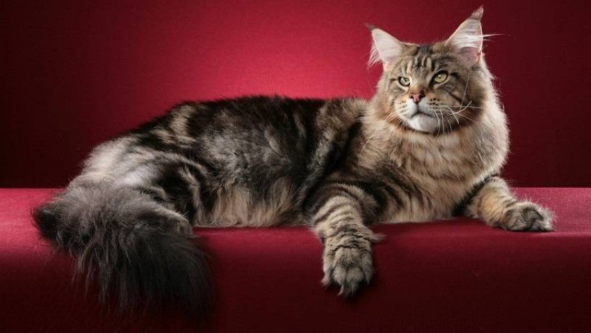
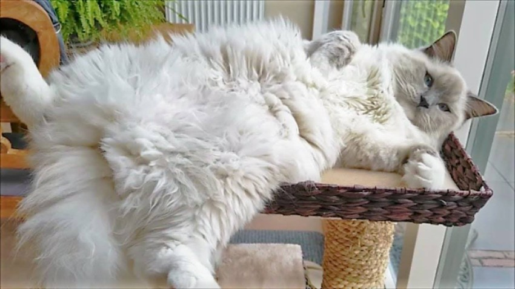
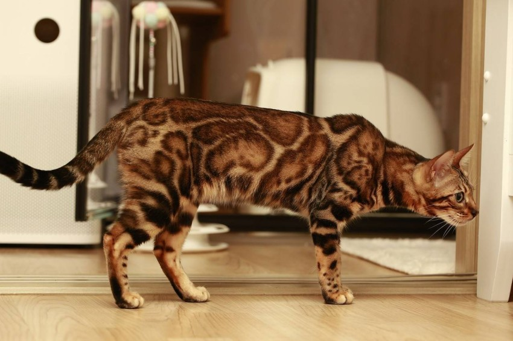
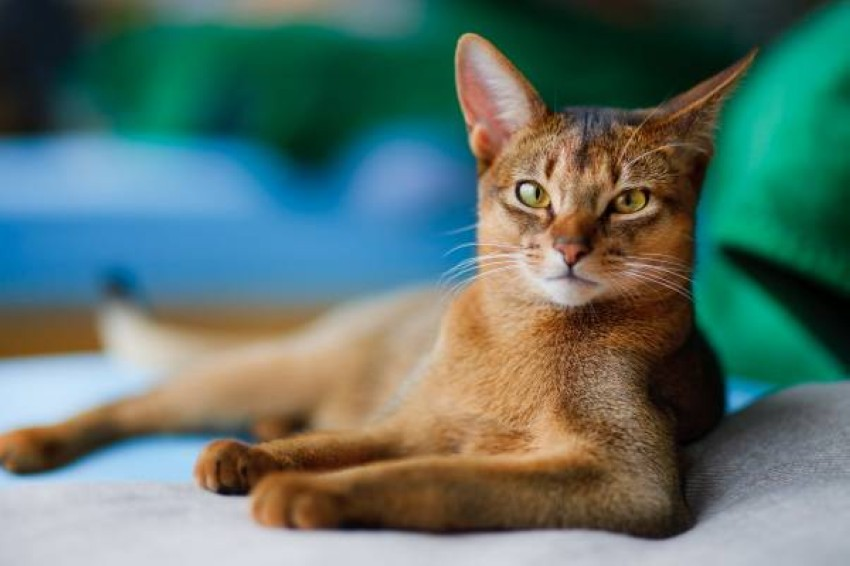

نوع القطط السيامي هو نوع شائع منذ القرن الـ19، نشأ هذا الصنف من القطط في تايلاند (المعروفة سابقاً باسم سيام)، وساعد السيامي في إنشاء العديد من السلالات الأخرى بما في ذلك Oriental Shorthair و Sphynx و Himalayan.
هناك نوعان من القطط السيامية، أحدهما برأس على شكل "تفاحة" وجسم ممتلئ، والأخرى برأس كبير وجسم نحيل.
الـقـط الـشـيـرازي
يمتلك القط الشيرازي، فراء طويلاً وجميل المظهر، ولا يشترط أن تكون بلون واحد، يمكن أن تأتي بأي لون من ألوان القطط المشهورة، كما أن لها وجهاً مسطحاً عند مقارنتها بمعظم سلالة قطط أخرى.
يتطلب فراء القط الفارسي أو الشيرازي تنظيفاً منتظماً وإلا سيكون عرضة للأمراض وخاصة أمراض الكلى والقلب ونمو البراغيث والحشرات بداخلها

قـط الـمـيـن كـون
تشتهر Maine Coon بقوامها الكبير وفرائها السميك، وهي قطة يصعب تجاهلها، إنها صيادة عظيمة وشاع بعد أن اعترف بها CFA أنها من السلالات الأصيلة في أواخر السبعينيات، لا تزال واحدة من سلالات القطط الأكثر شعبية.
لدى العديد من مين كون أصابع إضافية وهي سمة يشار إليها باسم تعدد الأصابع، ما يجعل أقدامها الكبيرة بالفعل أكبر، وهذه ميزة رائعة عند الصيد في الثلج لأن الأقدام الكبيرة تعمل كأحذية ثلجية

قـط الـراغـدول
تبدو الراغدول مثل القطط السيامية ذات الشعر الطويل مع أنماط ألوانها المدببة، لديها أيضاً عيون زرقاء مميزة وشخصيات تشبه الكلاب، تتبع أصحابها في جميع أنحاء المنزل

قـط الـبـنـغـال
قطط البنغال هي قطط برية المظهر حرفياً، علاماتها تجعلها تبدو وكأنها تنتمي إلى الغابة أكثر من منزلك، لكنها مع ذلك قطط مستأنسة، إنها ثرثارة وتتطلب الكثير من التمارين.
يأتي اسمها من الاسم التصنيفي لقطط النمر الآسيويPrionailurus bengalensis bengalensis ، حيث تم تربيتها في الأصل من كل من القطط المنزلية والقطط البرية، وتحصل على أنماطها الجميلة من هذا القط البري أيضا

الـقـط الـحـبـشـي
هو في الأصل من إثيوبيا، والقط الحبشي لديه فراء أحمر برتقالي اللون، وله مظهر فريد ومختلف عن باقي سلالة قطط
قـط الـبـريـمـان
Birmans هي قطة أخرى ذات لون مدبب مثل السيامي والراغدول، عيونها زرقاء ومعطفها متوسط الطول، ما يميزها عن الفرس وجبال الهيمالايا.
تم استخدام البيرمان للتكاثر في تطوير الراغدول، لذلك تبدو متشابهة جداً ولكن يمكن أن يكون لها علامات وشخصيات مختلفة قليلاً